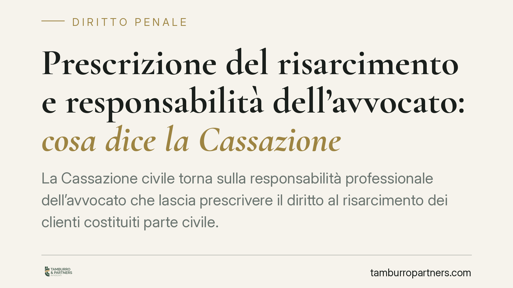

Prescrizione del risarcimento e responsabilità dell'avvocato: cosa dice la Cassazione
La Cassazione civile torna sulla responsabilità professionale dell'avvocato che lascia prescrivere il diritto al risarcimento dei clienti costituiti parte civile. La decisione chiarisce due profili: il mandato può essere provato anche senza procura alle liti, e la polizza RC non copre il dolo né il sinistro denunciato in ritardo. Conseguenze concrete per chi esercita la professione forense.

Il caso e la materia
Una precisazione preliminare, per onestà di classificazione. La vicenda nasce in ambito penale — clienti costituiti parte civile in un procedimento — ma la pronuncia che la chiude appartiene al diritto civile: si discute della responsabilità professionale dell'avvocato verso i propri assistiti. La Sezione III civile della Cassazione si è occupata del danno subito da alcuni clienti per essersi visto prescrivere il diritto al risarcimento che il legale avrebbe dovuto coltivare.
L'avvocato era stato ritenuto responsabile in appello. La difesa opponeva l'assenza di procura alle liti formale e invocava la copertura della propria assicurazione. Su entrambi i fronti la Corte ha respinto le censure.
*(Nota sulla fonte: il riferimento numerico dell'ordinanza riportato dalla rassegna stampa indica un anno non coerente con una pronuncia già resa e confermativa d'appello; i principi qui esposti vanno letti come orientamento consolidato della Sezione III civile, da verificare sul testo ufficiale prima di qualsiasi citazione processuale.)*
Inquadramento normativo
Due sono i pilastri normativi realmente rilevanti.
Il primo è l'obbligo assicurativo dell'avvocato, previsto dalla L. 247/2012 (ordinamento della professione forense), che impone al professionista una copertura per la responsabilità civile derivante dall'esercizio dell'attività. È lo sfondo che rende centrale il secondo pilastro.
Il secondo è l'art. 1917 c.c., che disciplina l'assicurazione della responsabilità civile. La norma fissa un principio decisivo: l'assicuratore non è tenuto a tenere indenne l'assicurato per i danni derivanti da fatti dolosi. Il dolo del professionista — a differenza della colpa, anche grave — resta fuori dalla copertura. Questo spiega perché, nel caso di specie, la condotta e le modalità di gestione della denuncia abbiano fatto venir meno la protezione della polizza.
Mandato sostanziale e procura alle liti
Il punto più utile per la pratica è la distinzione tra due concetti spesso confusi.
La procura alle liti è l'atto formale con cui il cliente conferisce al difensore il potere di rappresentarlo in giudizio. Il mandato sostanziale, invece, è il rapporto professionale di base: l'incarico di curare gli interessi del cliente. La Corte ha chiarito che l'esistenza del mandato può essere provata anche in assenza di procura formale, attraverso elementi di fatto: corrispondenza, attività svolta, pagamenti, rapporti intercorsi.
Tradotto: l'avvocato non può difendersi sostenendo di non avere mai ricevuto una procura scritta, se dagli atti emerge che ha di fatto gestito la posizione del cliente. Il rapporto esiste, e con esso la responsabilità.
I limiti della copertura RC
La polizza del professionista non opera in due situazioni emerse nel giudizio.
La prima è il dolo: per i fatti dolosi l'art. 1917 c.c. esclude la garanzia. La seconda è la comunicazione tardiva del sinistro. Le polizze RC forensi sono quasi sempre strutturate secondo il modello claims made ("a richiesta fatta"): la copertura opera non per il momento in cui si commette l'errore, ma per il momento in cui la richiesta di risarcimento viene formulata e denunciata all'assicuratore entro i termini di polizza. Chi comunica il sinistro fuori termine rischia di restare scoperto anche per una condotta meramente colposa.
È il modello opposto al loss occurrence ("per fatto avvenuto"), dove conta la data dell'evento dannoso. La differenza non è teorica: determina se, in concreto, l'assicurazione paghi o meno.
Il dies a quo della prescrizione
Il danno da prescrizione del diritto risarcitorio pone un problema di tempistica. Il termine entro cui il cliente può agire contro il proprio avvocato decorre dal momento in cui il pregiudizio si manifesta e diventa oggettivamente percepibile — tipicamente quando il diritto che doveva essere coltivato è ormai irrimediabilmente perso. Individuare correttamente questo dies a quo (giorno iniziale) è spesso decisivo tanto per il cliente quanto per il professionista.
Cosa fare in concreto
- Formalizzate sempre l'incarico per iscritto, con mandato e preventivo: non conta solo la procura alle liti, conta il rapporto professionale documentato.
- Mappate le scadenze prescrizionali di ogni pratica con un sistema di alert, verificando il dies a quo di ciascun credito.
- Leggete la vostra polizza: accertate se è claims made o loss occurrence e quali sono i termini di denuncia del sinistro.
- Denunciate tempestivamente all'assicuratore ogni circostanza potenzialmente dannosa, anche solo sospetta: la comunicazione tardiva può azzerare la copertura.
- Ricordate che il dolo non è assicurabile: nessuna polizza protegge da condotte intenzionali.
Ogni condominio ha una storia a sé.
Se gestisci un'amministrazione e vuoi un confronto su una specifica questione condominiale, scrivi allo studio. Ti rispondiamo entro un giorno lavorativo.